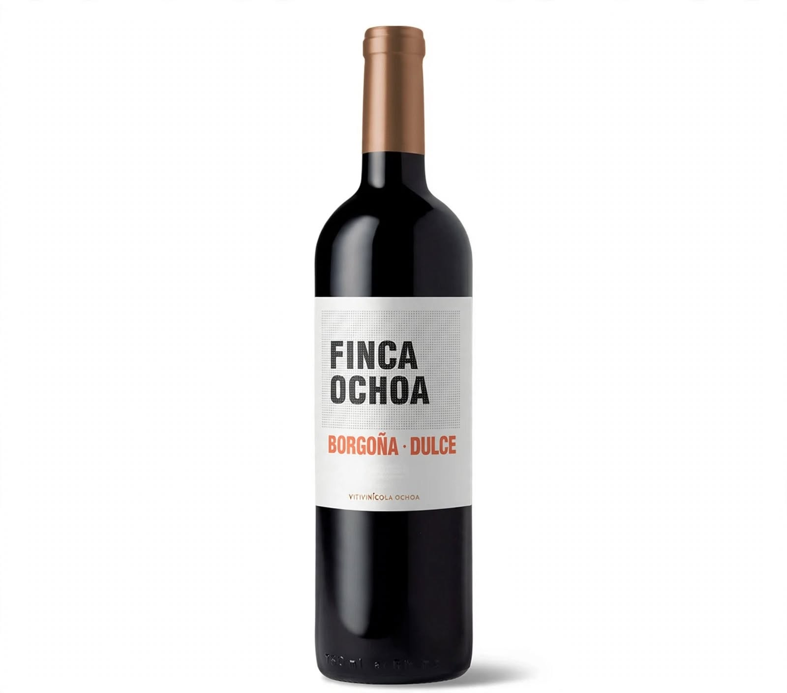
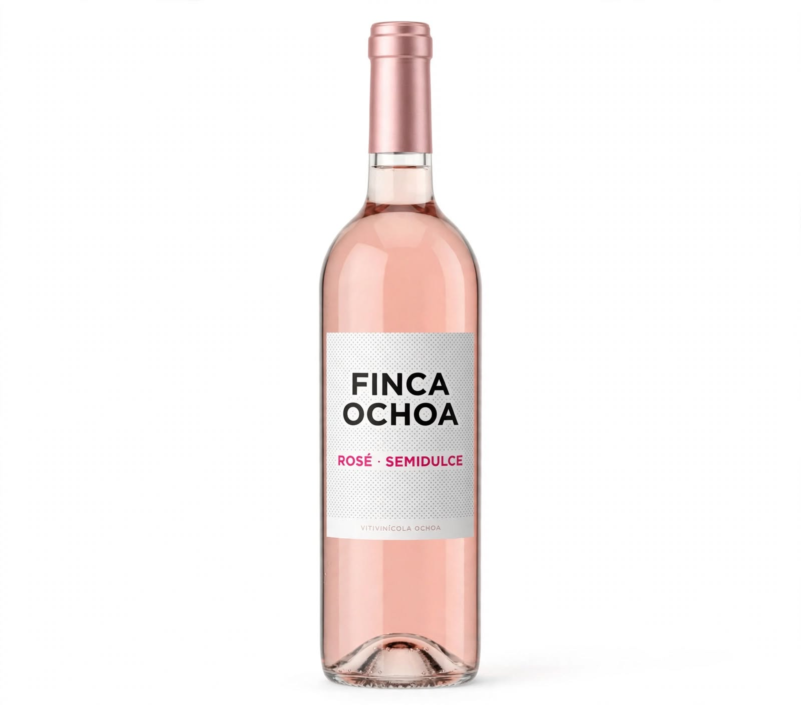
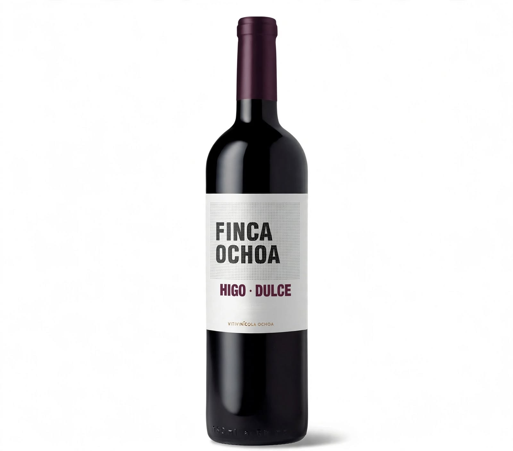
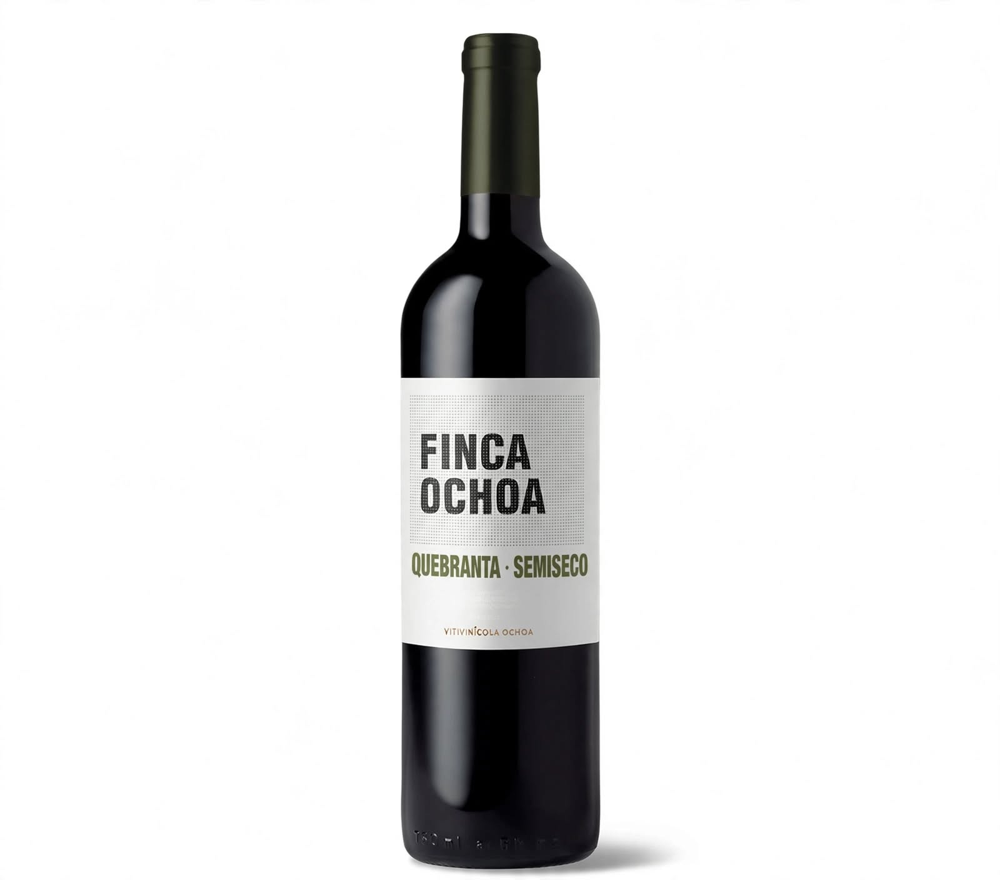
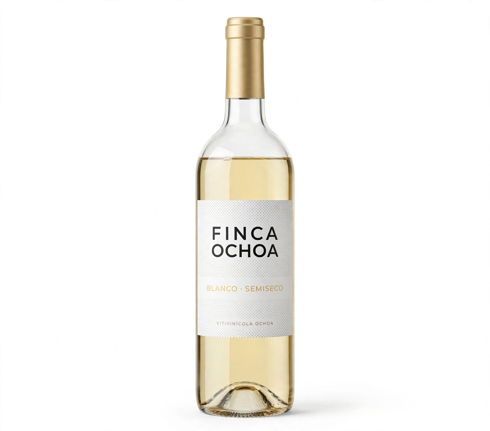
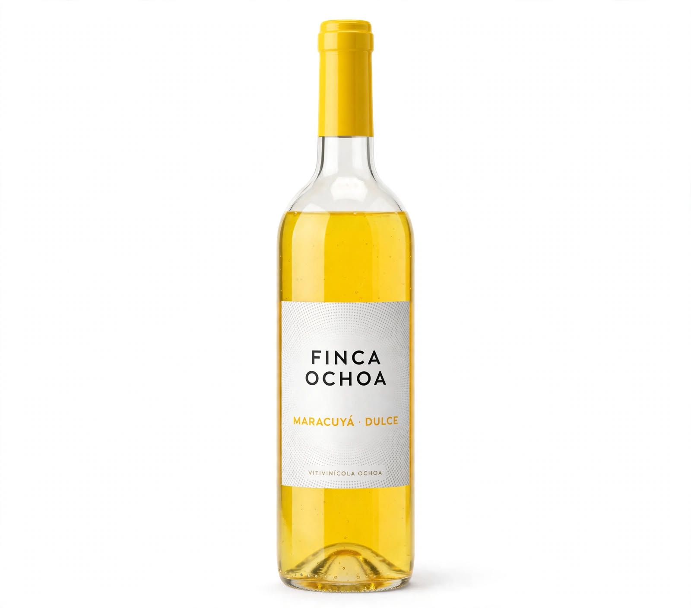

Desde 1997 · Valle de Lunahuaná
El sabor de Lunahuaná en cada botella
En Finca Ochoa reunimos seis variedades de vinos artesanales inspiradas en el valle de Cañete. Descubre sus sabores y encuentra una opción para compartir.
Presentación de 750 ml · Precio referencial: S/ 39.90

Nuestro catálogo
Seis sabores para descubrir
Conoce cada variedad y consulta por WhatsApp el precio y la disponibilidad actuales.





Nuestra historia
Una tradición familiar en Cañete
Desde 1997, Finca Ochoa comparte una propuesta vitivinícola ligada a Lunahuaná y al trabajo familiar.
Conocer másAtención directa
¿Tienes una consulta?
Escríbenos para preguntar por variedades, precios vigentes, disponibilidad y opciones de entrega.
Ir a contactoPara aprender
Videos sobre la elaboración del vino
Selecciona una miniatura para ver el video en YouTube. Se necesita conexión a internet.


Ayuda
Preguntas frecuentes
¿Cuál es el precio de los vinos?
El precio referencial mostrado es S/ 39.90 por botella de 750 ml. Consulta por WhatsApp el precio vigente.
¿Realizan envíos?
Consulta la cobertura, el costo y las condiciones de entrega para tu ciudad.
¿Puedo visitar la bodega?
La vitivinícola se encuentra en Lunahuaná, Cañete. Coordina con anticipación y solicita la dirección exacta.